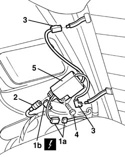

5570T28 ecu for car radio aerial in rear window heater element - r+r
- Path
- Procedures > 55 ELECTRICAL EQUIPMENT > 5570 ACCESSORIES > 5570T car radio and car telephone > 5570T28 ecu for car radio aerial in rear window heater element - r+r
- Kind
- repair procedure (removal / refitting; the operation number is the code)
- Applies to
- all engines; all production periods
- Interactive page
- https://sloeber94.github.io/elrnDB-a156/en/#/3238508
Applies to: all engines; all production periods
 Removing
Removing
 Refitting
Refitting7040H42 rear pillar trim - r r (Right side)
1. Disconnect the electric connections (1a, 1b).
 | Name | Connector |
|---|---|---|
1a | Aerial and heated rear window control unit |
| Name | Connector |
|---|---|---|
1b | Aerial and heated rear window control unit |
2. Disconnect the connections of the antenna cable.
3. Disconnect the electric connections from the rear window.
4. Unscrew the screw.
5. Remove the power unit.

Applies to: all engines; all production periods
Refitting
RemovingCheck that the power unit is not damaged.
Mount the power unit and fix it with the screw.
Connect the connections.
7040H42 rear pillar trim - r r (Right side)
Check the functionality of the car radio set.
Topics linked from this page (4)
- 7040H42 rear pillar trim - r r
- 7050A19 rear seat squab - r r
- P22A Aerial and heated rear window control unit ( REAR )
- P22B Aerial and heated rear window control unit ( REAR )